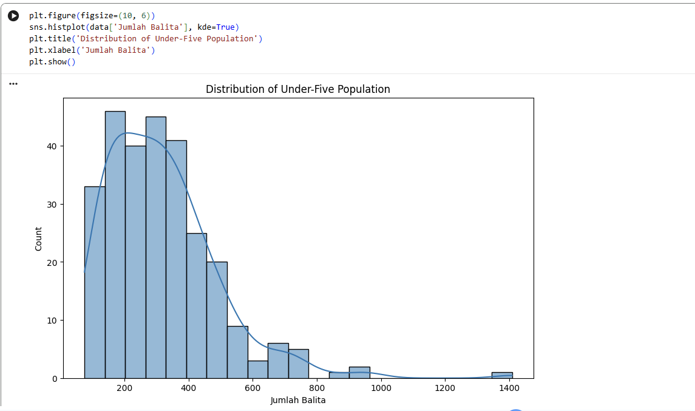
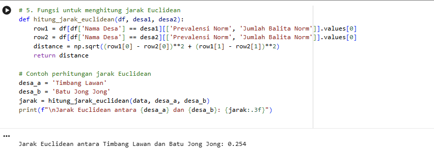
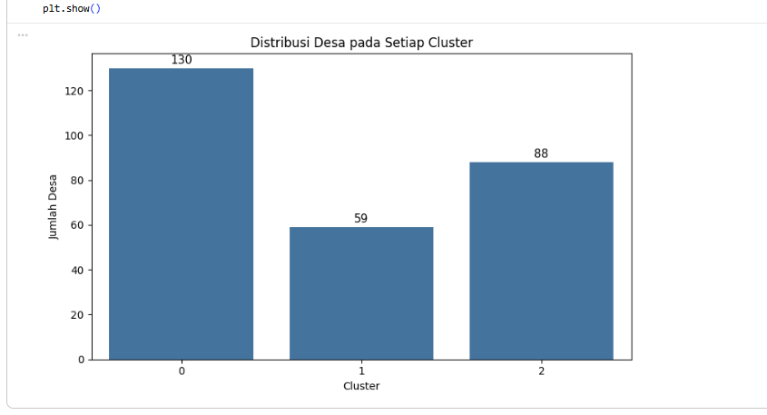
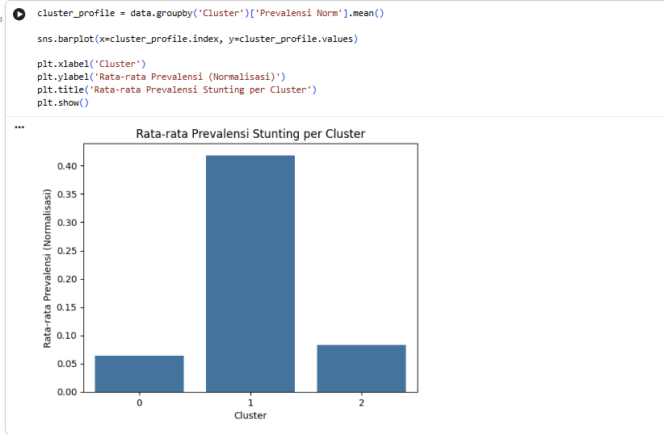

Stunting Risk Clustering in Langkat Regency Using K-Medoids
Identifying village-level patterns based on stunting prevalence and under-five population.

Technical Stack
Ringkasan: Analisis clustering menggunakan Python dan K-Medoids untuk mengelompokkan desa di Kabupaten Langkat berdasarkan prevalensi stunting dan jumlah balita.
2. Problem & Analytical Questions
Analisis ini bertujuan untuk menjelaskan variasi prevalensi stunting antar desa dan kebutuhan untuk menemukan kelompok desa dengan karakteristik serupa.
- Bagaimana distribusi prevalensi stunting antar desa?
- Apakah desa dapat dikelompokkan berdasarkan karakteristik yang serupa?
- Berapa jumlah cluster yang sesuai untuk dataset?
- Bagaimana karakteristik masing-masing cluster?
- Apakah jumlah balita berkaitan secara konsisten dengan prevalensi stunting?
3. Dataset & Data Understanding
- Source: e-Monev Konvergensi Stunting, Kementerian Dalam Negeri
- Year: 2023
- Scope: Kabupaten Langkat
- Unit: Desa
- Records: 277
Data Dictionary
| Column | Description | Role |
|---|---|---|
| No | Nomor record | Identifier |
| ID BPS | Identifier desa BPS | Identifier |
| ID Dagri | Identifier desa Kemendagri | Identifier |
| Nama Desa | Nama desa | Identifier |
| Jumlah Balita | Jumlah anak balita | Clustering feature |
| Stunting Pendek | Jumlah stunting pendek | Supporting variable |
| Stunting Sangat Pendek | Jumlah stunting sangat pendek | Supporting variable |
| Prevalensi (%) | Prevalensi stunting | Clustering feature |
4. Data Quality Check


5. Exploratory Data Analysis (EDA)
5.1 Distribution of Stunting Prevalence
Distribusi prevalensi stunting di Kabupaten Langkat memperlihatkan pola right-skewed atau condong ke kanan secara signifikan. Mayoritas desa berkerumun pada tingkat prevalensi yang sangat rendah, yakni di bawah 5%, dengan puncak kepadatan tertinggi berada di rentang 0% hingga 2%. Meskipun secara umum angka stunting tampak terkendali di sebagian besar wilayah, kurva ekor panjang (long tail) yang menjuntai ke sebelah kanan mengungkapkan adanya sejumlah kecil desa dengan tingkat stunting yang ekstrem. Terdapat beberapa desa yang mencatatkan prevalensi jauh melampaui rata-rata, membentang dari 10% hingga mendekati angka 25%.

5.2 Top 10 Villages by Prevalence
Visualisasi bar chart tersebut secara spesifik menyoroti 10 desa dengan tingkat prevalensi stunting tertinggi di Kabupaten Langkat. Desa Jaring Halus menempati urutan pertama sebagai wilayah paling kritis dengan angka prevalensi yang melampaui batas 25%. Posisi ini diikuti erat oleh desa Timbang Jaya, Perlis, Kebun Kelapa, dan Alur Gadung yang seluruhnya mencatatkan angka prevalensi di atas 20%. Bahkan, desa yang berada di urutan kesepuluh (Tebing Tanjung Selamat) masih menunjukkan tingkat stunting di kisaran 14,5%. Daftar 10 besar ini dengan jelas memetakan titik-titik lokasi darurat (hotspots) yang mutlak membutuhkan prioritas utama dan intervensi gizi segera dari pemerintah daerah. Selain itu, grafik ini mengonfirmasi keberadaan desa-desa outlier yang sebelumnya terlihat pada bagian ekor panjang (long tail) di histogram distribusi.

5.3 Distribution of Under-Five Population
Visualisasi histogram distribusi jumlah balita kembali memperlihatkan pola right-skewed atau condong ke kanan. Mayoritas desa di Kabupaten Langkat memiliki populasi balita pada rentang yang moderat, yakni terpusat di kisaran 100 hingga 400 jiwa per desa. Meskipun sebagian besar desa memiliki populasi yang wajar, grafik ini dengan jelas menyoroti adanya ekor panjang (long tail) di sisi kanan. Hal ini mengindikasikan keberadaan segelintir desa "padat penduduk" yang memiliki jumlah balita di atas 600 hingga 800 jiwa. Bahkan, terlihat sangat jelas adanya nilai ekstrem (outlier) di mana sebuah desa mencatatkan populasi balita yang sangat masif, yaitu mendekati angka 1.400 jiwa. Distribusi yang tidak merata dan kehadiran desa-desa berpopulasi padat ini menjadi variabel penting. Dalam konteks kebijakan kesehatan, desa dengan populasi balita yang sangat besar memerlukan kapasitas fasilitas kesehatan (seperti Posyandu) yang jauh lebih masif untuk mencegah terjadinya ledakan kasus gizi buruk.

5.4 Population vs Prevalence
Visualisasi scatterplot antara Jumlah Balita dan Prevalensi Stunting mengungkapkan ketiadaan korelasi linear yang positif antara kedua variabel tersebut. Desa-desa yang mencatatkan tingkat prevalensi stunting terekstrem (berada di kisaran 15% hingga melampaui 25%) justru didominasi oleh wilayah dengan jumlah populasi balita yang relatif kecil hingga menengah, yakni di bawah 400 jiwa. Sebaliknya, desa-desa padat penduduk dengan populasi balita di atas 600 hingga mendekati 1.400 jiwa secara konsisten mencatatkan angka prevalensi yang sangat rendah, rata-rata di bawah 5%.

6. Data Preparation
Feature selection: Menggunakan Prevalensi (%) dan Jumlah Balita sebagai fitur clustering. Identifier seperti No, ID BPS, ID Dagri, dan Nama Desa tidak dimasukkan ke model.
6.1 Min-Max Scaling
Terdapat perbedaan rentang nilai (magnitude) yang sangat timpang antara kedua fitur utama. Prevalensi berada dalam skala persentase kecil (0 hingga 25,7%), sedangkan jumlah balita berada dalam skala ratusan hingga ribuan (75 hingga 1.409 jiwa). Jika data mentah ini langsung diproses, perhitungan jarak Euclidean akan sangat bias dan sepenuhnya didominasi oleh variabel populasi. Oleh karena itu, transformasi menggunakan Min-Max Scaler diterapkan untuk mengonversi kedua variabel ke dalam rentang rasio standar (0 hingga 1) tanpa mengubah pola sebaran/distribusi aslinya.

7.1 Euclidean Distance
Setelah kedua variabel utama diseragamkan rentang nilainya melalui Min-Max Scaling, langkah selanjutnya adalah menghitung tingkat kemiripan karakteristik antar desa. Analisis ini menggunakan metrik Euclidean Distance, yang secara matematis mengukur jarak garis lurus terpendek antara titik-titik observasi berdasarkan ruang dua dimensi: Prevalensi Norm dan Jumlah Balita Norm.
Untuk memvalidasi cara kerja algoritma di balik layar, fungsi kalkulasi jarak Euclidean secara manual (hitung_jarak_euclidean) telah dibangun dan diuji pada data sampel. Sebagai contoh perhitungan, pengujian jarak antara desa Timbang Lawan dan Batu Jong Jong menggunakan metrik ini menghasilkan jarak sebesar 0.254. Semakin kecil jarak skor ini, semakin mirip profil stunting kedua desa tersebut, yang pada akhirnya akan menjadi dasar pembentukan klaster.

8. Choosing the Number of Clusters
Penentuan jumlah klaster yang optimal dilakukan secara analitik menggunakan Metode Elbow dengan menguji nilai k (jumlah klaster) mulai dari 2 hingga 9. Grafik Elbow Curve memvisualisasikan besaran inersia, yakni total jarak metrik dari setiap titik data ke pusat klasternya masing-masing (medoid). Semakin kecil inersia, semakin rapat dan padat kelompok data tersebut. Berdasarkan hasil pengujian, terlihat adanya penurunan nilai inersia yang sangat curam dan signifikan dari titik $k=2$ menuju $k=3$. Namun, setelah melewati titik $k=3$, laju penurunan inersia mulai melandai secara drastis, sehingga pergerakan kurvanya membentuk sudut patahan yang menyerupai siku (elbow). Mengacu pada prinsip analitik titik siku tersebut, penambahan klaster lebih dari 3 tidak lagi memberikan pengurangan inersia yang substansial. Oleh karena itu, k=3 ditetapkan sebagai jumlah klaster yang paling ideal dan efisien secara komputasi. Dari perspektif bisnis dan operasional, pembagian menjadi 3 klaster ini juga sangat rasional dan strategis. Klasifikasi ini akan memudahkan pemerintah daerah Kabupaten Langkat dalam memetakan tingkat kerawanan desa ke dalam tiga status prioritas intervensi gizi yang terukur (misalnya: Prioritas Rendah, Prioritas Menengah, dan Darurat).

9. Clustering Results
Penerapan algoritma K-Medoids (k=3) pada 277 desa di Kabupaten Langkat menghasilkan pemisahan kelompok dengan kualitas pemisahan yang dikonfirmasi oleh Silhouette Score sebesar 0,410. Visualisasi scatter plot di bawah ini memetakan sebaran hasil klasterisasi, di mana tanda X merah menandakan posisi medoid (observasi data aktual yang paling merepresentasikan titik pusat karakteristik dari masing-masing klaster).

Algoritma membagi wilayah observasi ke dalam tiga profil desa dengan karakteristik operasional yang sangat berbeda:
| Cluster | Jumlah Desa | Avg. Prevalensi | Avg. Balita | Karakteristik Utama |
|---|---|---|---|---|
| 0 | 130 | 1,64% | 216 | Prevalensi dan jumlah balita relatif rendah. |
| 1 | 59 | 10,76% | 252 | Prevalensi stunting relatif tinggi. |
| 2 | 88 | 2,13% | 507 | Jumlah balita relatif tinggi. |
9.1 Cluster Distribution
Visualisasi bar chart di bawah ini mendeskripsikan secara kuantitatif pemetaan ke-277 desa ke dalam tiga klaster yang telah terbentuk:
- Cluster 0 mendominasi pembagian wilayah dengan mengelompokkan jumlah anggota terbanyak, yakni 130 desa.
- Cluster 2 menempati posisi kedua dengan total agregat 88 desa.
- Cluster 1 bertindak sebagai kelompok yang paling spesifik dan berukuran paling kecil, mengisolasi 59 desa.
Distribusi komposisi yang tidak simetris ini wajar terjadi dalam algoritma K-Medoids. Model secara natural mengumpulkan desa-desa murni berdasarkan kedekatan metrik prevalensi dan populasi, bukan berdasarkan kuota wilayah yang sama rata.

9.2 Profiling Tingkat Prevalensi antar Klaster
Analisis cluster profiling memvisualisasikan rata-rata prevalensi stunting (dalam skala normalisasi) untuk masing-masing kelompok. Grafik ini menyoroti ketimpangan yang sangat tajam dan mengonfirmasi karakteristik utama dari setiap klasternya:
- Cluster 1 menonjol dengan lonjakan batang tertinggi, mencatatkan rata-rata prevalensi melampaui angka 0,40 pada skala normalisasi. Visual yang sangat kontras ini secara definitif memvalidasi status Cluster 1 sebagai kelompok wilayah paling kritis (darurat stunting) yang wajib menjadi target utama program pengentasan gizi buruk pemerintah daerah.
- Cluster 0 dan Cluster 2 menunjukkan rata-rata prevalensi yang sangat landai, yakni berada jauh di bawah angka 0,10. Hal ini memberikan temuan analitik yang penting: meskipun Cluster 2 memiliki jumlah populasi balita terpadat (berdasarkan metrik sebelumnya), rasio kasus stunting di wilayah tersebut justru terbukti sangat terkendali dan relatif aman, setara dengan Cluster 0.

13. Limitations
- Model utama hanya menggunakan dua fitur: prevalensi stunting dan jumlah balita. Clustering tidak membuktikan hubungan kausal atau faktor penyebab stunting.
- Variabel sosial-ekonomi, akses layanan kesehatan, geografis, dan indikator gizi belum tersedia dalam model.
- Pemilihan k=3 perlu diperkuat dengan perbandingan Silhouette Score untuk beberapa nilai k.
14. Recommendations / Next Steps
- Tambahkan variabel sosial-ekonomi, akses kesehatan, geografis, dan indikator gizi jika tersedia.
- Bandingkan K-Medoids dengan metode clustering lain untuk menguji kestabilan pola.
- Evaluasi kualitas cluster dengan beberapa metrik dan beberapa nilai k.
- Gunakan hasil cluster sebagai dasar eksplorasi lebih lanjut, bukan sebagai bukti faktor penyebab mutlak.
Let's Work Together 🚀
Saya terbuka untuk peluang baru di bidang System Analyst, Data Analytics, maupun IT Solution Engineering. Jika Anda memiliki proyek atau posisi yang sesuai, mari terhubung!